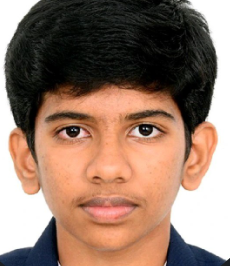

Ram Chitti
Aspiring Computer Scientist
McKinney, Texas, United States
Email ID : venkata.chitti19800101@gmail.com
Ph : +1 (469) 450 5085
Ram's Linkedin Profile
Ram is a Technology Enthusiast with a keen interest in Computer Science. He is interested in exploring
the applications of Technology in various fields.
Core Competencies
Project Execution |Tech Savvy |Feedback Collection| Social Media Marketing|Customer Discovery| Collaborative
Problem Solving |Conflict Resolution|Business Development |MVP Development|Google Applications |Potential
Customer Interaction | LinkedIn Marketing | Python (Basic) |Mathematics|HTML
Education
- Middle School (2024 Graduate) – Scoggins Middle School, Frisco ISD
- BVM Global Bollineni Hillside Chennai (2020-2023)
Work Summary
Sip and Serve(Jan 2024 - )
Marketing Content Creation
- Played a vital role as part of the team, responsible for crafting marketing content tailored for
instagram.
- Leveraged Canva to design visually appealing, and informative content.
Jetson(Sep 2023 - Dec 2023)
Business Dev Intern (Launchpad Fall Cohort)
- Landed a place in the Jetson Launchpad Fall cohort, boasting a selective 7% acceptance rate, and
received guidance from experienced business founders.
- Conducted Problem Identification, explored potential business ideas and composed the problem
statement by identifying the groups facing the problem, defining the issue and assessing implications.
Executed Competitive Analysis to grasp market dynamics, identify gaps, and strategic positioning for
my idea. Evaluated competitors, comparing features and qualities for informed decision-making.
- Engaged in direct conversations with potential customers to understand their needs, challenges, and
wants, ensuring alignment with market demand and real-world problem-solving.
- Developed an MVP specifically designed advertising purposes, illustrating the product's functionalities
and emphasizing its unique features that distinguish it from others in the market.
- Collected feedback on the MVP from the target audience identified in order to refine the business
idea to better meet customer needs.
- Promoted the concept on LinkedIn, actively engaging with the professional network to collect
feedback. Supported this initiative by using Google Forms to systematically gather insights.
IMUN-Internation Model United Nations(Feb 2023-Mar 2023)
Campus Ambassador Intern (Non-Interactive)
-
Leveraged social media accounts to invite individuals to participate in the IMUN Conferences
-
Promoted the conference within my campus and network
Volunteering and Clubs
-
Volunteered to Collaborate with teammates to organize a quiz competition for 4th and 5th graders at
my school (BVM Global) on December 21, celebrating Math Day. Successfully coordinated with
multiple teams to fulfill requirements.
-
Represented the "Hindi Club" and my team at my school's Club Inauguration in the distinguished
presence of Ms. OV Gnana Swathika, a Professor at VIT. Acknowledging my commitment, I was offered
a leadership role within the club.
Awards and Recognitions
-
All A Honor Roll - Scoggins Middle School
-
Presidential Award - Scoggins Middle School
- Class Topper in SOF Olympiads